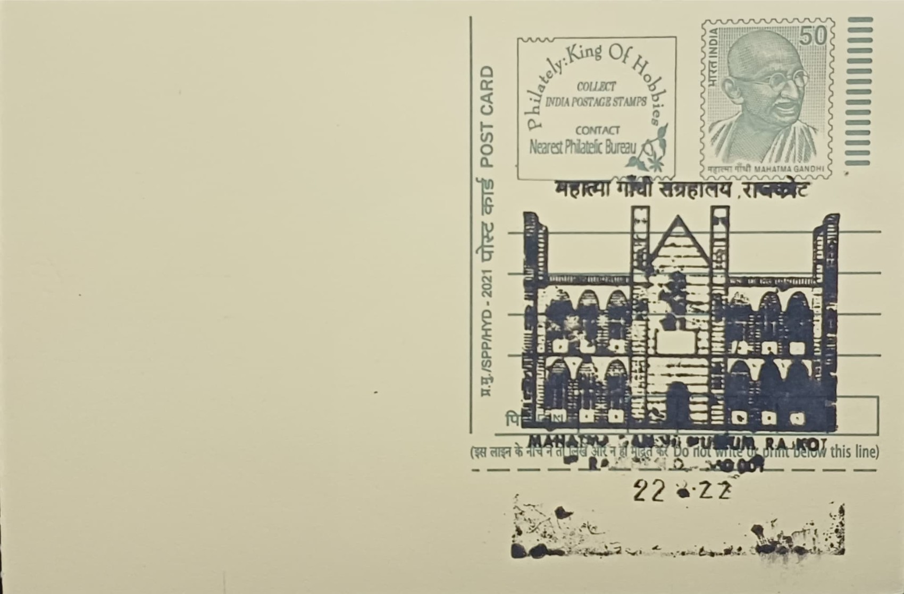

Mahatma Gandhi Museum
મહાત્મા ગાંધી સંગ્રહાલય


The building that today houses the Mahatma Gandhi Museum began its civic life as Rajkot English School, founded in 1853 to serve the princely states of Kathiawar. The present structure was erected in the 1870s with funding from the Nawab of Junagadh and opened in January 1875 by the Governor of Bombay; it was renamed Alfred High School in 1907 in honour of Prince Alfred, Duke of Edinburgh. Mohandas Gandhi was enrolled there as a boy and matriculated from the school in 1887, one of only two candidates from his cohort to clear the entrance examination that year, giving the institution its enduring association with his name.
As a heritage site, the museum occupies a distinctive place among Gandhi memorials in India in that it is not a site of pilgrimage, death, or political action but one tied specifically to his schooling, making it a biographical rather than a commemorative monument in the usual sense. The building itself was also one of the longest continuously operating school campuses in the country, functioning for roughly 164 years before its closure in 2017 prompted public debate, including a legal challenge, over its conversion into a museum. Its dual identity as both an educational landmark and a Gandhian memorial gives it standing distinct from the ashrams and samadhis that dominate the rest of the Gandhi memorial circuit.
The school building is built in a Gothic-Norman idiom typical of civic architecture from the British colonial period in western India, with pointed arches, patterned brickwork, and a symmetrical two-storey plan around a central courtyard. Following the school's closure, the Gujarat government undertook a structural restoration of the building before its reopening as a museum on 30 September 2018, timed to coincide with the run-up to the 150th anniversary of Gandhi's birth and inaugurated by the Prime Minister along with the state's Chief Minister and Deputy Chief Minister. The original classrooms were retained in form but converted internally into thirty-nine themed galleries distributed across the ground and upper floors.
A notable feature of the museum is the deliberate split in its gallery sequence: the eighteen ground-floor galleries trace the chronological narrative of Gandhi's life, from his Rajkot childhood and schooling through his years in South Africa to the campaigns of the Indian freedom movement, while the twenty-one galleries upstairs are organised thematically around his principles, including truth, non-violence, and self-reliance, rather than following a timeline. The galleries rely heavily on sensor-triggered displays, touchscreen kiosks, 3D models, and a dedicated 3D projection-mapping show rather than static text panels, an approach meant to appeal to younger visitors as much as to Gandhian scholars.
Entry to the museum is ticketed, and it draws a steady stream of school groups, researchers, and tourists following the broader Rajkot Gandhi heritage trail, which also includes the Kaba Gandhi No Delo residence nearby. The museum continues to be run jointly by the Rajkot Municipal Corporation and Gujarat Tourism, which oversee its upkeep and public programming out of the restored colonial-era building rather than a purpose-built structure. That arrangement has kept the site functioning less as a conventional museum annexe and more as the preserved classroom environment in which Gandhi himself once sat for lessons.
| Date of Introduction | October 2, 2020 |
|---|---|
| Address | Incharge, |
| Philatelic Bureau, Rajkot HO-PB, | |
| Rajkot (dt.), Gujarat - 360001. |